|
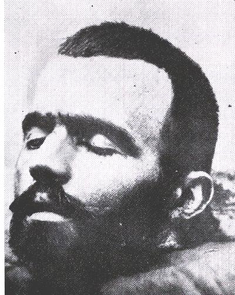
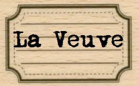
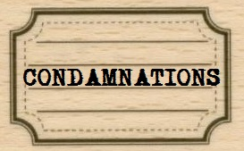
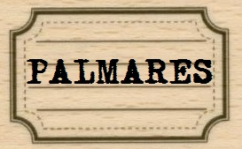
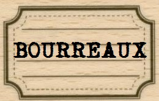
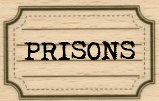
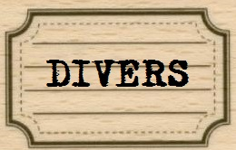
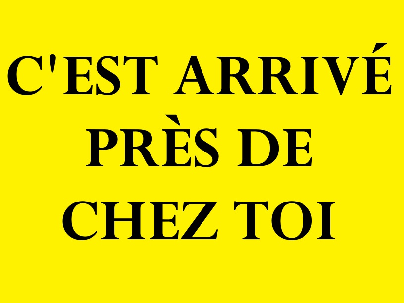
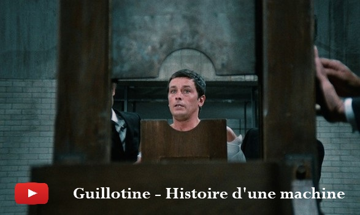

Ne prenez pas "en compte" le chiffre ci-dessus : à la clôture du site précédent, nous comptabilisions près de 150.000 visites.
Les aléas des déménagements successifs !
|
LE SITE DE LA VEUVE GUILLOTINE
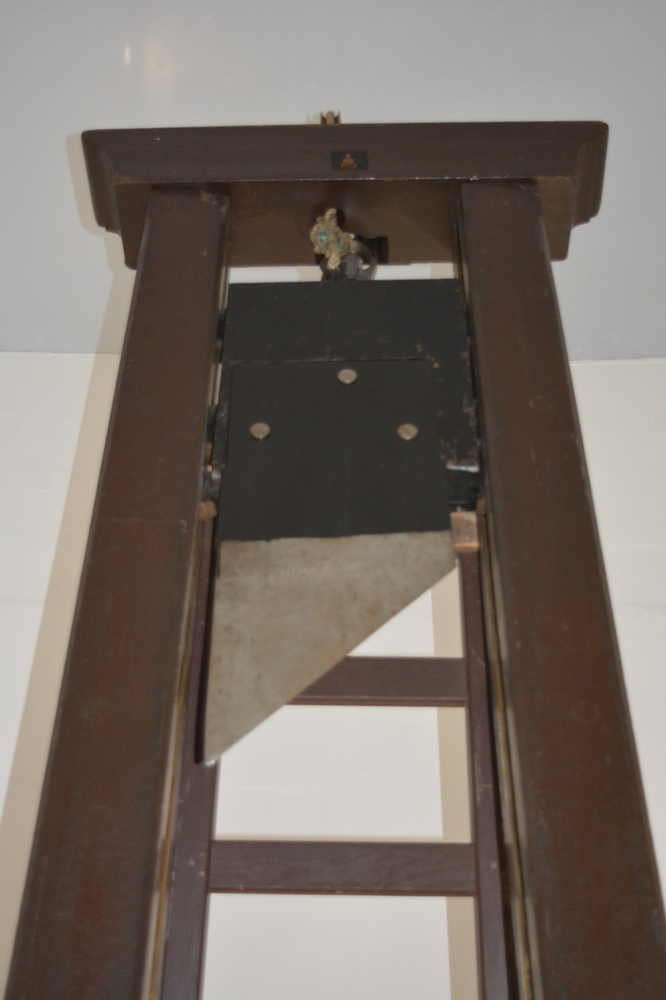
Ce site n'a pas pour but de faire l'apologie de la peine capitale, de prôner son emploi ou son rétablissement.
Il est le résultat de plus de vingt années de recherches historiques, motivées il est vrai par une fascination un peu morbide envers la guillotine, mais son but est de retracer l'histoire de la "haute justice" en France de la Révolution à l'abolition de 1981.
Hébergé de 2002 à 2015 sur Voila.fr, puis sur Orange jusqu'en 2023, il est désormais accessible via Github.
J'espère que vous y trouverez de quoi satisfaire votre soif de connaissance sur le sujet.
Le webmaster
06 juillet 2026 : Remise en ligne du site.
03 août 2026 : deux nouvelles exécutions en 1816 et 1821 (merci à Sylvain Michot).
LIENS
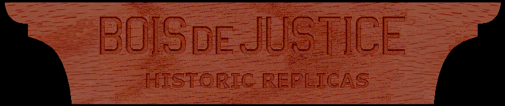
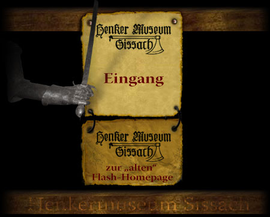
|
| |